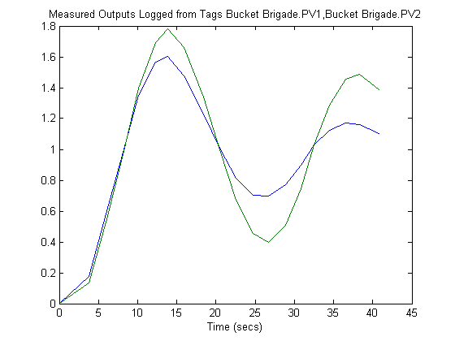

This demo implements an MPC object as an online control application using the OPC client supplied with the OPC Toolbox. The demo uses the (free) Matrikon Simulation OPC server to simulate the behavior of an industrial process.
Download and install the server and set it running either as a service or as an application. Note that this demo requires the OPC Toolbox.
h = opcda('localhost','Matrikon.OPC.Simulation.1'); connect(h);
In practice the plant would be a physical process, and the OPC tags which define its I/O would already have been created on the OPC server. However, since in this case a simulation OPC server is being used, the plant behavior must be simulated. This is achieved by defining tags for the plant manipulated and measured variables and creating a callback (mpcopcPlantStep) to simulate plant response to changes in the manipulated variables. Two OPC groups are required, one to represent the two manipulated variables to be read by the plant simulator and another to write back the two measured plant outputs storing the results of the plant simulation.
% Build an opc group for 2 plant inputs and initialize them to zero plant_read = addgroup(h,'plant_read'); imv1 = additem(plant_read,'Bucket Brigade.MV1'); set(imv1,'DataType','double'); writeasync(imv1,0); imv2 = additem(plant_read,'Bucket Brigade.MV2'); set(imv2,'DataType','double'); writeasync(imv2,0); % Build an opc group for plant outputs plant_write = addgroup(h,'plant_write'); additem(plant_write,'Bucket Brigade.PV1'); additem(plant_write,'Bucket Brigade.PV2'); set(plant_write,'WriteAsyncFcn',[]) % Supress command line display % Create plant model plant_model = ss([-.2 -.1; 0 -.05],eye(2,2),eye(2,2),zeros(2,2)); disc_plant_model = c2d(plant_model,1);
We assume no model mismatch, a control horizon 6 samples and prediction horizon 20 samples
mpcobj = mpc(disc_plant_model,1); set(mpcobj,'P',20,'ControlHorizon',6); mpcobj.weights.ManipulatedVariablesRate = [1 1]; % Build an internal MPC object structure so that the MPC obejct % is not rebuilt each callback execution. [y1,state1] = mpcmove(mpcobj,[1;1]',[1 1]');
-->No value for PredictionHorizon supplied. Trying PredictionHorizon=10. -->No ControlHorizon specified. Assuming ControlHorizon=2 -->No Weights.ManipulatedVariables specified, assuming default 0.00000 -->No Weights.ManipulatedVariablesRate specified, assuming default 0.10000 -->No Weights.OutputVariables specified, assuming default 1.00000 -->Integrated white noise added on measured output channel #1 -->Integrated white noise added on measured output channel #2 -->No Model.Noise specified, assuming white noise on each measured output channel
Build two OPC groups, one to read the two measured plant outputs and the other to write back the two meanipulated variables.
% Build an opc group for MPC inputs mpc_read = addgroup(h,'mpc_read'); impcpv1 = additem(mpc_read,'Bucket Brigade.PV1'); set(impcpv1,'DataType','double'); impcpv2 = additem(mpc_read,'Bucket Brigade.PV2'); set(impcpv2,'DataType','double'); impcref1 = additem(mpc_read,'Bucket Brigade.Ref1'); set(impcref1,'DataType','double'); writeasync(impcref1,1); impcref2 = additem(mpc_read,'Bucket Brigade.Ref2'); set(impcref2,'DataType','double') writeasync(impcref2,1);
% Build an opc group for mpc outputs mpc_write = addgroup(h,'mpc_write'); additem(mpc_write,'Bucket Brigade.MV1'); additem(mpc_write,'Bucket Brigade.MV2'); set(mpc_write,'WriteAsyncFcn',[]); % Supress command line display
Build two opc groups based on the same external opc timer to trigger execution of both plant simulation and MPC execution when the contents of the OPC time tag chnages
gtime = addgroup(h,'time'); time_tag = additem(gtime,'Triangle Waves.Real8'); set(gtime,'UpdateRate',2); gtime.DataChangeFcn = {@mpcopcPlantStep plant_read plant_write disc_plant_model}; gmpctime = addgroup(h,'mpctime'); additem(gmpctime,'Triangle Waves.Real8'); set(gmpctime,'UpdateRate',2); gmpctime.DataChangeFcn = {@mpcopcMPCStep mpc_read mpc_write mpcobj};
Log the plant measured outputs from tags 'Bucket Brigade.PV2' and 'Bucket Brigade.PV2'
set(mpc_read,'RecordsToAcquire',20); start(mpc_read); while mpc_read.RecordsAcquired < mpc_read.RecordsToAcquire pause(3) disp(sprintf('Logging data: Record %d / %d',mpc_read.RecordsAcquired,... mpc_read.RecordsToAcquire)) end stop(mpc_read);
Logging data: Record 1 / 20 ... Logging data: Record 20 / 20
x = getdata(mpc_read); for k=length(x):-1:1 items = {x(k).Items.ItemID}; I = find(strcmp('Bucket Brigade.PV1',items)); y(k,1) = x(k).Items(I(1)).('Value'); I = find(strcmp('Bucket Brigade.PV2',items)); y(k,2) = x(k).Items(I(1)).('Value'); t(k) = datenum(x(k).LocalEventTime)*3600*24; end plot(t-t(1),y) title('Measured Outputs Logged from Tags Bucket Brigade.PV1,Bucket Brigade.PV2') xlabel('Time (secs)');